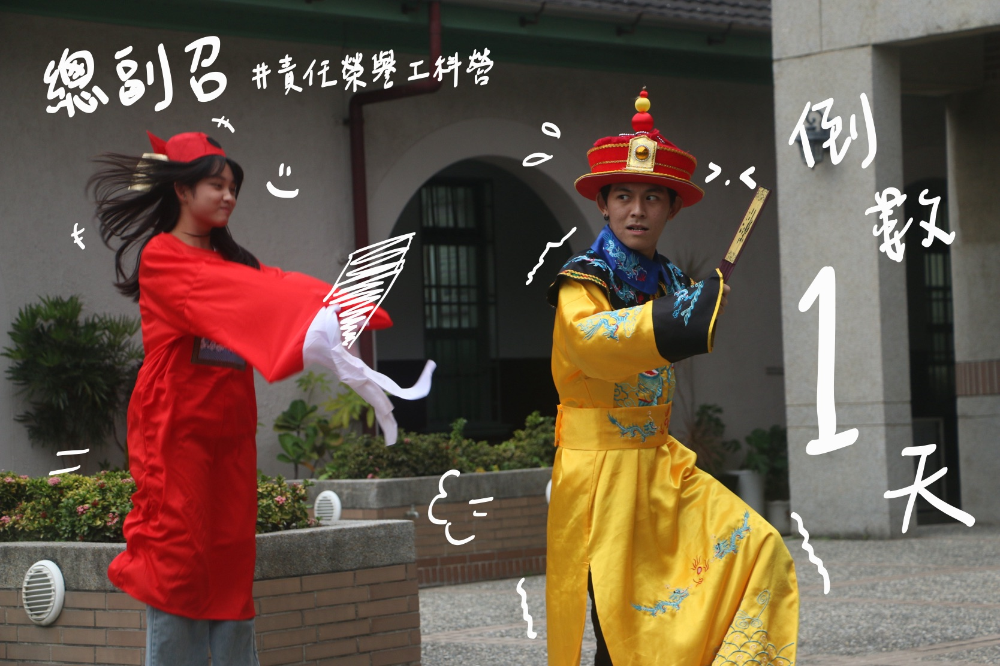
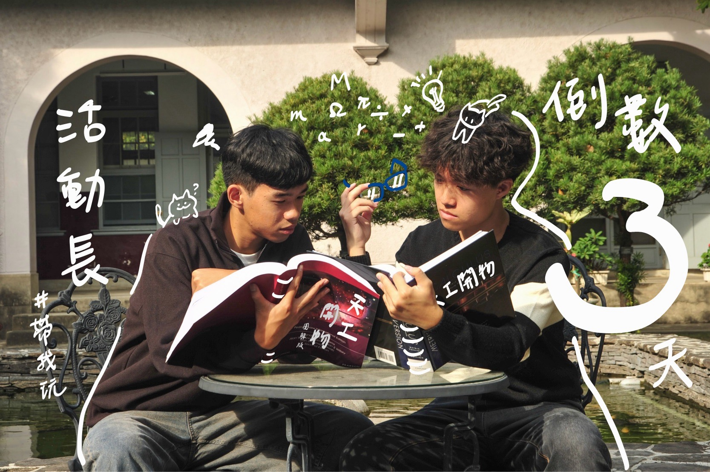
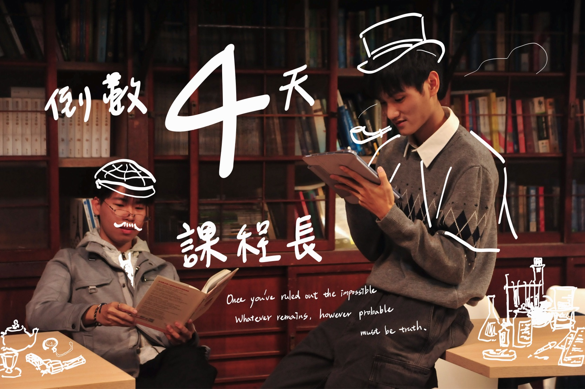

幹部介紹
總副召
劉備那溫暖的桃花源才剛隱去，周遭的景色瞬間流轉。柔和的風轉為凜冽的氣息，金碧輝煌的宮殿拔地而起，龍紋與鳳篆在樑柱間交相輝映，氣勢磅礡。
小工、小珂、小瑩三人站在大殿中央，感受到一股前所未有的威壓。正前方龍椅之上，一位身披黃金明光鎧的帝王威嚴端坐，而他身側，一位氣質雍容的皇后正手執硃砂筆，批閱著案卷。
「那是……唐太宗李世民與長孫皇后？」小瑩屏住呼吸，認出了這對傳奇的帝后。
李世民目光如炬，聲音沉穩：「今日便讓你們知曉，何為掌舵者的擔當。」
話音剛落，他大手一揮，殿中出現了一方沉甸甸的傳國玉璽，與一座懸掛著「理想」與「現實」的巨大天平。
「我想給眾人最盛大的慶典，要讓所有隊輔與學員皆以此為傲！」李世民指著玉璽，眼中閃爍著對完美的渴望，「這是總召的野心。」
然而，一旁的長孫皇后卻輕輕撥動手中的金算盤，清脆的聲響瞬間讓氣氛冷靜下來。
她微笑著將一枚枚金幣放入天平的另一端：「皇上心懷天下，但本宮需為他精算每一分銀兩。若無糧草，再好的局也只是空中樓閣。這是副召的職責。」
三人面面相覷，瞬間懂了——總召負責衝，副召負責穩。
「試試看吧。」長孫皇后示意，「在預算有限的情況下，撐起這場活動，且不能讓剛才那些小隊員失望。」
小工試著去拿玉璽，卻發現重得驚人，差點跌倒。「這……這玉璽怎麼這麼重？」
「此乃『責任』。」李世民起身走下臺階，「總召之位，需協調六部、決斷紛爭。當各組意見不合，當夢想與現實衝突，你扛得住嗎？」
就在這時，天平也開始劇烈搖晃，象徵資金的紅燈亮起。小珂與小瑩急忙衝過去幫忙計算，刪減不必要的開支，與虛擬的廠商議價。
「不能只顧著省錢！」小工想起了劉備的教誨，咬牙喊道，「如果砍掉這個預算，隊輔們帶小隊員的器材就不夠了！氣氛會冷掉的！」
「那就從場佈這邊調整，把錢留給人的體驗！」小珂靈機一動，精準地調整了資源配置。
在三人的通力合作下，他們不僅顧及了活動的精彩，也照顧到了人的感受，同時守住了預算的底線。
小珂與小瑩穩住了天平，這讓小工手中的玉璽頓時輕盈了許多。那一刻，他們明白了：總召的決策需要副召的支持，而所有的精算，都是為了讓這群人聚在一起的夢想成真。
看著天平歸位、玉璽高舉，李世民與長孫皇后相視一笑，眼中滿是讚賞。
「君明臣賢，同心同德。」李世民解下披風，長孫皇后遞出帳冊，兩者化作金龍與彩鳳，盤旋著衝入雲霄。
「把這份默契帶回去吧，去開創屬於你們的盛世！」
光芒散去，小工、小珂、小瑩猛然回神，發現自己回到了熟悉的營本部。
桌上堆滿了企劃書與預算表，不再是令人畏懼的難題，而是通往夢想的藍圖。
「雖然只是一場夢……」小工握緊拳頭，感受著那份殘留的力量，「但我現在覺得我們什麼都做得到。」
小珂看著手中的計算機，眼神堅定：「有總召的魄力，也有副召的細心，我們這場營隊，絕對穩了！」
「我已經迫不及待了！」小瑩看著窗外明媚的陽光，笑容燦爛
三人對視一笑，眼裡燃燒著熱血與期待。
最精彩的冬天，最強大的陣容。 我們準備好了，你呢？

隊輔長
諸葛亮的身影隱入風中，周圍那精密的戰略地圖也隨之消散。取而代之的，不是肅殺的戰場，而是一處春風和煦、桃花盛開的草廬庭院。
空氣中少了幾分緊張，多了一股暖意。一位身著布衣、面容寬厚溫和的男子，正坐在草蓆上編織著什麼。他沒有帝王的霸氣，卻有一種讓人想不由自主靠近的親切感。
「那是……劉備，劉玄德？」小珂驚訝地發現，自己原本緊繃的神經竟不知不覺放鬆了下來。
劉備抬起頭，眼神清澈如水，嘴角帶著令人如沐春風的微笑：「孔明教了你們如何運籌帷幄，但若無人願意追隨，再完美的計策也不過是紙上談兵。」
他招手示意三人坐到身邊：「營隊之中，活動是骨架，而隊輔，便是那流動的血液與溫度。」
此時，庭院中出現了幾位虛擬的「小隊員」。他們有的低著頭顯得害羞尷尬，有的因為想家而眼眶泛紅，還有的因為剛才活動輸了在生悶氣。整個氣氛顯得有些低迷僵硬。
「試試看，讓他們笑出來。」劉備將手中編好的一只草結遞給小瑩。
小工想用剛才學到的規則去命令：「大家集合！現在要開心一點！」結果小隊員們反而退得更遠了。 小珂試圖用道理說服：「別難過啦，這只是遊戲。」但效果甚微。
劉備輕輕搖頭：「帶人先帶心。蹲下來，與他們視線齊平，去聽他們在想什麼。」
三人恍然大悟。 小瑩不再站著說話，而是蹲在那位想家的學員面前，遞上那枚草結，溫柔地聊天。
小工拍了拍生悶氣學員的肩膀，陪他一起罵了兩句，然後逗得對方破涕為笑。 小珂則帶著害羞的學員玩起了簡單的拍手遊戲。
漸漸地，庭院裡的氣氛變了。原本的沈悶被笑聲取代，原本的疏離變成了緊密的圓圈。那幾位小隊員開始主動拉著三人的手，眼中充滿了信賴。
看著這溫馨的一幕，劉備欣慰地點頭，眼中泛著淚光（這是他招牌的感性）：「勿以善小而不為。一句問候、一個眼神、一次陪伴，這便是隊輔最強大的武器。」
隨著桃花瓣漫天飛舞，劉備的身影漸漸淡去，但他那雙溫暖的手彷彿還停留在三人的肩頭，傳遞著一股堅定的力量。
風中傳來他最後的囑託：
「得人心者得天下。去吧，成為那道光，照亮每一個小隊員的心房。」

活動長
孔子的身影剛剛消散，小瑩正要開口感嘆，卻發現周圍的景色再次變換。
原本平整的地面湧起薄霧，腳下的實作場域化作了一張巨大的立體戰略地圖，蜿蜒的時間軸如河流般在三人腳下流淌。
高臺之上，一人羽扇綸巾，迎風而立。他未發一語，僅是輕搖羽扇，眼前的迷霧便隨著他的動作散開，露出了清晰的星象與路徑。
「那是……臥龍先生？」小工瞪大了眼睛，感受到一股強大的氣場。
小珂忍不住指著地圖上的光點：「你們看，那些亮點好像在動！」
諸葛亮目光掃過三人，眼神中透著洞悉世事的睿智，聲音清朗：「能過仲尼那一關，足見汝等有心。但營隊之勢，如行雲流水，若無運籌，便成散沙。」
他羽扇一指，地圖上的光點瞬間放大，化作立體的影像。「看好了。」
隨著羽扇的節奏，影像流轉：先是歡迎晚會的熱鬧破冰，瞬間點燃人群；
緊接著是舞會的燈光流轉，節奏精準地扣人心弦；最後是營火晚會的沖天烈焰，將氣氛推向最高潮。
「這節奏接得太完美了……」小瑩看得目瞪口呆，「這是怎麼做到的？」
「非是魔法，乃是佈局。」諸葛亮微微一笑，招手讓三人走上高臺，「一場活動，便是這一分一秒的精算。何時該動，何時該靜，皆在掌握之中。」
他將幾面令旗交到他們手中：「試著調度看看，讓歡樂之火在對的時刻燃起。」
三人接過令旗，小工負責監控時間，小珂調整燈光與音樂的順序，小瑩則指揮著人群的流動。
一開始，三人手忙腳亂，舞會的音樂差點接不上晚會的結尾。
諸葛亮在旁輕聲提點：「心要靜，眼要遠。活動長之責，便是要在混亂中理出秩序，在平淡中創造驚喜。」
在孔明的引導下，三人終於抓住了默契。
小珂一個信號，小工精準倒數，小瑩引導氣氛，讓模擬的活動流程如行雲流水般順暢演繹，最終在絢爛的虛擬煙火中完美落幕。
諸葛亮滿意地點頭，羽扇輕掩笑意：「運籌帷幄之中，決勝千里之外。你們已懂得了掌控全場的關鍵。」

課程長
小瑩還來不及把句子接上，那道身影已走近，聲音沉穩而清晰： 「汝等三人，被兵馬所卷，卻仍能守住心緒，不錯。」
三人對望，滿臉問號。孔子看著他們手上的姓名貼，微微一笑，抬手一揮，場景隨之變得像棋盤般規整。
「既已到此，不妨學些本事。營中之道，不止遊戲，亦是修心。」 兵馬俑化為能自行移動的棋子，開始交錯前進。
「試試合作引導它們到終點。」孔子語氣平靜。
三人慌亂之中互相喊話、分配路線，終於讓棋子順利抵達。
孔子點頭：「同心者，百事可成。」
下一秒，毛筆少女們出現在他們身邊，筆尖輕舞，光痕流動。
孔子示意： 「敢想才能成形。來，與她們一道，畫出你們隊伍的徽記。」
三人跟著創作，意外地越畫越順。孔子看著成果，笑意更深： 「表達之能，勝於藏於心。」
最後，場景化為簡易實作場域。孔子親手示範器材操作，讓三人逐一嘗試。
「知其然，亦需知其所以然。動手，方能真正得其法。」 等他們完成操作，孔子身影已微微發散。
他留下最後一句： 「今日所學，帶回汝隊，助彼此成長。」
要好好聽課程上課喔~

美宣長
器材兵馬俑們伴隨著樂曲一齊前進，瞬間塵土飛揚，雖速度緩慢，但聲勢浩大。
小工、小珂、小瑩還來不及放下碗筷，便不小心被捲入這場地鳴之中，他們在兵馬俑軍隊中載浮載沉，在回過神時，被眼前的景象驚呆了。
竟然是兩根毛筆浮在空中！
「這是⋯誰的毛筆？」
小珂伸手把玩著毛筆，發現背後被貼上帶有精緻手繪圖案的姓名貼。
「美宣雙人組？⋯這兩根毛筆竟是美宣雙人組的所有物嗎？！」
就在他們驚嘆之際，這兩根毛筆竟然開始揮舞，畫下了小工、小柯、小瑩的專屬姓名貼。
兩根畫藝精湛的毛筆，化身為兩位擅長繪畫的女孩，為每個人揮舞畫筆，留下獨一無二的美好，讓回憶躍然紙上。

器材長
飽餐後，小工還沉醉在那張如藝術品般的照片裡，忽然感到四周光線悄悄改變，一股古老、像被塵封千年的氣息正慢慢升起。
「等等…這味道…兵馬俑？」
小工猛地轉頭。
果然——
陰影中浮現一隊沉默、筆直的秦軍俑，彷彿被喚醒。
步兵俑率先拉開黑布幕，落下瞬間宛如史書翻頁。
火把俑抬手，光束逐一點亮，金橙色照在地面，像歷史甦醒。
樂官俑敲起古樂器，節奏沉穩，營地瞬間化為帝王祭典。
小工完全說不出話。
他明白了——
這群兵馬俑不是來打仗，而是奉命建造一座完美舞台，沉默精準如千年守護者。
影記低聲說：
「我們能拍下美好瞬間，是因為他們先打造好世界。」
器材，總是在看不見的角落默默付出

影記
飽餐後，小工隱隱覺得有人在偷看自己。
「吃個飯也要被看來看去，這些臭狗仔」
被偷看的感覺越來越強烈，小工再也受不了了，他猛的轉身！
「喀擦！」
清脆的快門聲響起。
這些人太過分了，偷看就算了竟然還偷拍！小工剛想大聲呵斥，但這時，從傳來快門聲的暗處走出了兩個人。
「你們…你們是誰？」
小工非常疑惑，不知道這兩個素未謀面的人為什麼要偷拍自己，陌生人不語，只是一邊笑著一邊把剛才的照片給小工看。
「這…這太美了…」
小工被眼前所見震驚到連話都快說不清楚了，這張照片就好像文藝復興時期的畫作，像冬天的一杯熱可可，一切都是這麼的完美。
原來，他們是工科營的影記，擁有很強的畫面捕捉能力跟對美的執著，
營期看到他們請記得擺出你們最燦爛的笑容，美好的畫面跟回憶永遠留存下去！

機動
經過治療後，小工、小珂和小瑩身上的傷勢竟然完全康復了！但在這時突然傳來一陣低沉性感的聲音。
「咕嚕咕嚕咕嚕…」
原來是小工、小珂和小瑩的肚子餓了，看著眾人飢餓難耐，華佗決定要帶著大家去他最喜歡吃的日式料理店吃點好的。
到店裡後，小工、小珂和小瑩看著菜單上琳瑯滿目的餐點，遲遲無法選擇出想吃什麼，忽然之間，三人眼睛一亮，小工甚至激動到叫出聲來。
「就是這個！我要吃雞丼！」
沒錯！以雞肉、雞蛋、洋蔥等覆蓋在飯上，再以碗盛裝而成的雞丼！！
機動組是工科營裡負責許多繁重工作的精銳，是營期不可或缺的角色。

醫官
當小工、小珂和小瑩沉浸在時光穿越的欣喜與驚訝時，不小心從萬里長城的階梯上掉了下去，
他們不斷翻滾跌落加旋轉，就在他們絕望之際，終於撞上了障礙物。
頓時煙霧瀰漫，在一片模糊之中，小工、小珂和小瑩互相檢查傷勢，突然，傳來性感的低音聲喃喃道。
「見諸君似需相助，吾等願為諸君療之。」
煙霧散去，出現的竟是華佗、張小娘子、義姁以及談允賢，
平時只在書上看見的古代名醫，此時此刻出現在小工、小珂和小瑩面前。
他們是這裡常駐的醫官，陪伴所有想成為出色工程師而努力的人們。
身體有任何不適都可以來找醫官們喔!